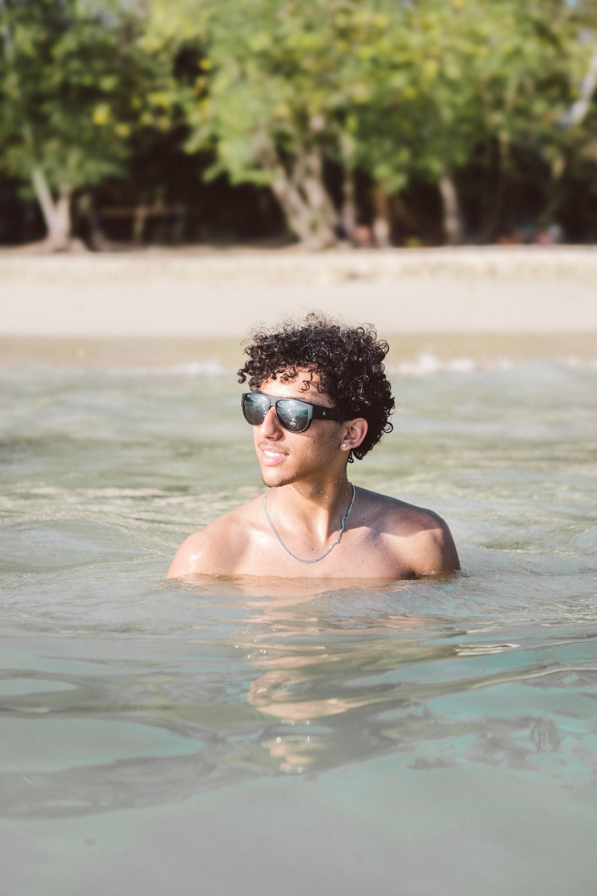

Graphisme
Identités visuelles, logos, affiches et visuels pour les réseaux sociaux.

À propos
Je suis Lenny, j'ai 19 ans et je suis en 2e année de BUT MMI à l'IUT Clermont Auvergne, sur le site du Puy-en-Velay, en parcours Création Numérique.
J'ai toujours aimé créer, et Minecraft m'a fait prendre conscience encore plus à quel point j'aimais ça. Mon père est photographe : il fait souvent de la retouche photo et des logos, et je le vois faire depuis tout petit. Enfant, j'adorais me filmer avec mon frère pour faire des sketchs, que je montais ensuite sur CapCut, un logiciel que je maîtrise bien. Aujourd'hui, le montage vidéo reste ce que j'aime le plus, que ce soit pour mon vlog au Japon ou pour les projets de cours.
Je cherche un stage en graphisme, design ou montage vidéo pour apprendre au contact de pros et participer à de vrais projets.
Parcours
Du lycée de l'Oiselet au BUT MMI (« Métiers du Multimédia et de l'Internet ») : un mélange de graphisme, d'audiovisuel, de web et de communication.
Au lycée de l'Oiselet à Bourgoin-Jallieu, avec les spécialités NSI (numérique et sciences informatiques) et LLCER anglais.
Les bases de tous les métiers du multimédia : graphisme, audiovisuel, web, communication et expérience utilisateur. Au programme : le magazine Interface, la pub Car'Mix, des sites web et mes premières vidéos.
En ce moment. Je me spécialise dans la création : direction artistique, production graphique et audiovisuelle. Premier gros projet de l'année : la campagne des Aigles du Velay.
En graphisme, design ou montage vidéo, pour mettre en pratique tout ça dans une vraie équipe. Et pourquoi pas chez vous ?
Compétences
Identités visuelles, logos, affiches et visuels pour les réseaux sociaux.
Rythme, étalonnage, sous-titres : pubs, tutos, interviews et vlogs.
Magazine et supports print : gabarits, hiérarchie visuelle, préparation à l'impression.
HTML, CSS, JavaScript, PHP et MySQL : des sites reliés à une base de données.
Boîte à outils
Langues
À côté
J'adore les jeux vidéo, depuis toujours. Une passion qui ne m'a jamais lâché.
Voyager, c'est un vrai objectif de vie. Mon voyage au Japon en 2024 m'a même donné mon vlog.
Photographie
J'aime aussi photographier ce que je vois autour de moi, pour l'instant avec mon téléphone.